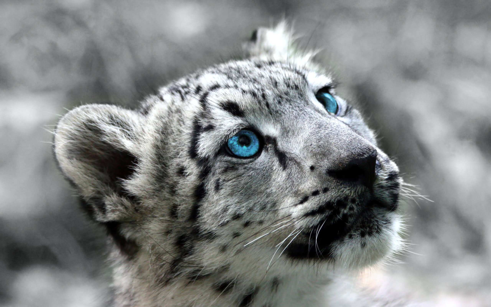

Les Léopards des Neiges
La panthère des neiges, aussi appelée Léopard des neiges, est une espèce de félins de la sous-famille des Pantherinae C'est un félin de taille moyenne avec des pattes courtes, des pieds larges et une longue queue qui représente quasiment la moitié de la longueur totale. La face, large et ronde, possède des oreilles courtes et arrondies. La robe est de couleur gris pâle à gris jaune constellée de taches pleines et de rosettes. La Panthère des neiges est fortement associée aux habitats de montagnes, avec une préférence pour les ravins escarpés et rocheux. On la rencontre dans les vallées des hautes montagnes d'Asie centrale, de Sibérie centrale et de l'Altaï, jusqu'à une altitude de 5 500 m. Elle est répertoriée sur la liste rouge de l'UICN comme faisant partie des « espèces vulnérables ». La population sauvage est estimée entre 4 500 et 8 700 individus. Elle est encore braconnée pour sa fourrure ou ses os et tuée en représailles lorsqu'elle s'attaque aux animaux domestiques. Des associations de sauvegarde aident les bergers à construire des enclos protecteurs s'ils s'engagent à ne pas tuer les prédateurs.